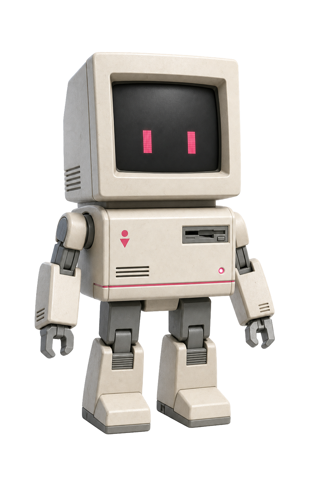

Accessibility Copilot

Sebastian Jansen’s Accessibility Copilot
Deine Wissensbasis für digitale Barrierefreiheit – und die Arbeitsgrundlage für KI-gestützte Prüfläufe. Mit den passenden Anweisungen, Quellen und Tests kann dein KI-Assistent Barrieren untersuchen, Befunde erklären und Änderungen nachtesten. Wenn er Zugriff auf das Projekt und die nötigen Werkzeuge hat, kann er vorhandene automatische Tests ausführen. Die fachliche Bewertung und die Prüfung mit Menschen bleiben entscheidend.
Zum eigenen Nachlesen brauchst du keinen KI-Dienst. Wenn du Material in einen KI-Chat einfügst, beachte dessen Datenregeln und nutze möglichst anonymisierte Ausschnitte.
Kopieren → im KI-Chat einfügen → eigene Aufgabe stellen. Das Paket enthält auch die Vertiefungen. Es gibt keine Verbindung zwischen dieser Website und deiner KI. Ist der Text zu lang? Lade das Paket herunter und hänge es im Chat an, sofern dein KI-Werkzeug Dateien unterstützt. Beachte dessen Eingabegrenzen.
Die Wirklichkeit
Menschen sollen ihr Ziel auf unterschiedlichen Wegen erreichen.
Wenn eine Aufgabe nur mit Maus, gutem Sehvermögen, hoher Konzentration oder perfekter Feinmotorik gelingt, stellt das Produkt eine unnötige Bedingung. Gute Accessibility-Arbeit beseitigt solche Bedingungen, damit mehr Menschen selbstständig handeln, teilhaben und Entscheidungen treffen können.
- sehenZoom, Kontrast, Blendung, Screenreader
- hörenUntertitel, Transkript, visuelle Signale
- bedienenTastatur, Touch, Sprache, Schalter
- verstehenklare Sprache, Struktur, Rückmeldung
- konzentrierenweniger Ablenkung, genug Zeit, Fehlertoleranz
- wechselnkleiner Bildschirm, laute Umgebung, nur eine freie Hand
Zugängliche Produkte geben Menschen mehr Möglichkeiten.
Sie liefern auch Browsern, assistiven Technologien und KI-Werkzeugen klarere Strukturen und verlässlichere Bedienelemente.
Das Werkzeug
Eine gemeinsame Grundlage für bessere Entscheidungen.
Der Copilot stellt Menschen und KI-Assistenten dieselben fachlichen Ausgangspunkte bereit: verbindliche Standards, verständliche Erläuterungen, Prüfmethoden und klare Grenzen. Die KI kann bereitgestellte Texte, Gestaltung, Code und Nutzungsschritte analysieren. Mit dem nötigen Zugriff kann sie Änderungen umsetzen und verfügbare Tests ausführen. Sie prüft jedoch nichts, was sie nicht erreichen oder bedienen kann.
- A
Im KI-Chat starten
Kopiert Anweisung, fachliche Grundlage und alle Vertiefungen als ein Textpaket. Füge es im KI-Chat ein und stelle deine Aufgabe. Alternativ: Paket herunterladen und im Chat anhängen.
- B
Selbst nachlesen
Öffne die fachliche Hauptquelle, folge ihren Vertiefungen und prüfe die verlinkten Primärquellen.
Arbeitsgrundlage ansehen - C
Benutzung verstehen
Die Anleitung erklärt die drei Wege: im KI-Chat, direkt im Code-Projekt oder durch eigenes Nachlesen.
Anleitung öffnen - D
Im Code-Projekt verwenden
Eine KI mit Zugriff auf dein Projekt liest zuerst ihre Arbeitsanweisung und lädt danach nur die für die Aufgabe nötigen Fachinformationen.
Arbeitsanweisung für die KI ansehen
KI-gestützte Qualitätssicherung
KI-Prüflauf Barrierefreiheit
Ich verbinde Accessibility-Fachwissen mit wiederholbaren Tests: Eine KI unterstützt beim Planen, Ausführen und Auswerten. Die Wissensbasis liefert Prüfmethoden und Quellen; vorhandene Testwerkzeuge liefern überprüfbare Ergebnisse. Der Copilot selbst ist keine Prüfengine und startet hier im Browser keinen automatischen Scan.
Prüfauftrag festlegen
Seiten, vollständige Nutzungspfade, Zustände und Zielstandard benennen. Passende vorhandene Tests auswählen und festhalten, welcher Zugriff fehlt und welche manuellen Prüfungen offenbleiben.
Tests ausführen
In dieser Website ergänzen sich axe-core-Scans, Prüfungen von Navigation und Seitengerüst, Workflow-Tests für Kontakt und Copilot sowie responsive WebKit-Checks. Auch Rulesets, Anleitung und Auffindbarkeit werden geprüft. Der Prüfauftrag ordnet diese Ebenen ein.
Befunde bewerten und nachtesten
Ergebnisse mit geprüftem Zustand, Umgebung und Nutzerwirkung dokumentieren. Bestätigte Fehler korrigieren, betroffene Abläufe erneut testen und offene Tastatur-, Screenreader- und Nutzungstests ausdrücklich ausweisen.
Wissen pflegen, Qualität sichern
Ich entwickle den a11y-copilot als Arbeitsgrundlage für meine Qualitätssicherung weiter. Hinweise aus Accessibility-Communities, Reddit, GitHub und Stack Overflow geben Rechercheimpulse. Vor der Übernahme in die Wissensbasis werden sie anhand von Primärquellen und passenden Gegenproben eingeordnet. Ein Erfahrungsbericht ist ein wichtiger Hinweis, aber kein allgemeiner Konformitätsnachweis.
Ein bestandener Prüflauf belegt nur die tatsächlich ausgeführten Tests. Ob Menschen ihr Ziel selbstständig erreichen, braucht zusätzlich fachliche Prüfung, assistive Technologien und Tests mit Menschen.
So wird es benutzt
Weg wählen. Kontext geben. Ergebnis prüfen.
Für den KI-Chat enthält das Startpaket die Anweisungen und alle Vertiefungen. Arbeitet die KI direkt in deinem Code-Projekt, erhält sie zusätzlich eine Arbeitsanweisung. Zum eigenen Nachlesen kannst du jede Textdatei direkt öffnen. Die Anleitung erklärt alle drei Wege unabhängig vom verwendeten KI-Werkzeug.
Passenden Einstieg wählen
Nutze das Startpaket im KI-Chat, die Arbeitsanweisung im Code-Projekt oder die Dokumente zum eigenen Nachlesen.
Aufgabe konkret machen
Ziel, vollständigen Ablauf, Zustände, Material und bekannte Rahmenbedingungen nennen. So wird aus einer allgemeinen Frage ein prüfbarer Auftrag.
Quellen und Tests prüfen
Aussagen zu Standards belegen und offene Prüfungen benennen lassen. Die vorgeschlagene Lösung anschließend im echten Produkt überprüfen: bekannte Fehler nachtesten und neue sowie betroffene bestehende Bedienelemente prüfen.
Verantwortungsvoll einsetzen
Was der Copilot kann – und was nicht.
Der Copilot hilft dabei, Probleme zu untersuchen, Quellen richtig einzuordnen und konkrete Lösungen vorzuschlagen. Ob eine Lösung funktioniert, zeigt sich erst im vollständigen Ablauf, mit echten Browsern, assistiven Technologien und Menschen.
Der Copilot garantiert weder Barrierefreiheit noch Konformität. Ein automatischer Test ist kein vollständiger Audit, eine Stichprobe sagt nichts über ungeprüfte Seiten aus und eine plausible Antwort ist keine verbindliche Quelle.
Eine selbst gewählte KI-Hilfe kann im Alltag unterstützen. Sie ersetzt keine zugängliche Website. Auch gut lesbare KI-Antworten können inhaltlich falsch sein. Mehr dazu in der Entscheidungshilfe zu KI und Selbstbestimmung.
Eine KI kann bekannte Fehler beheben und dabei neue Barrieren erzeugen. Vorhandene Komponenten und dokumentiertes Projektwissen helfen bei der Umsetzung; auch ihre Verwendung bleibt zu prüfen. Für belastbare Aussagen muss klar sein, was tatsächlich geprüft wurde. Manuelle Bedienungstests, Tests mit assistiven Technologien und Menschen sowie die rechtliche Einordnung bleiben eigene Aufgaben.